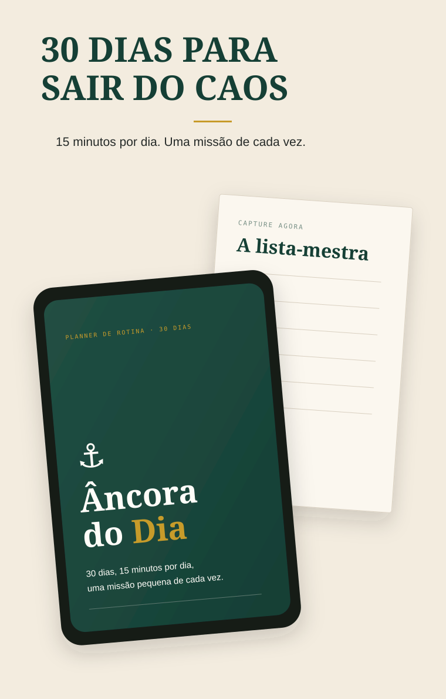

15 minutos por dia. Uma missão de cada vez.
Um sistema simples para tirar pendências da cabeça, escolher o que importa agora e parar de tentar consertar a vida inteira de uma vez.

Cabe em qualquer rotina e funciona no papel ou no celular.
Tire as pendências da cabeça e coloque tudo num único lugar, sem organizar ainda.
Escolha a UMA prioridade que torna o dia válido, mesmo que mais nada saia como planejado.
Faça uma coisa de cada vez, em blocos curtos e protegidos de interrupção.
Registre o próximo passo e encerre o dia sem carregar tudo mentalmente até amanhã.
Ele foi feito para quem abre o dia com pendência acumulada, apaga incêndio, tenta dar conta de tudo e acaba sentindo que nunca fez o suficiente.
Você não precisa dar conta de tudo. Precisa só saber o que merece sua atenção agora.
“Você só precisa cumprir a missão de hoje.”
Se perder um dia, não recomece do zero. Continue no próximo.Planner digital + imprimível com 38 páginas.
O método inteiro resumido em 1 página.
Para imprimir, deixar no caderno ou manter no celular e consultar quando o dia apertar.
Precisa apenas encontrar sua próxima âncora.
Planner completo + Cartão Âncora de bônus.
Você pode acessar o material e, se não fizer sentido para você, solicitar o reembolso dentro do prazo da garantia.